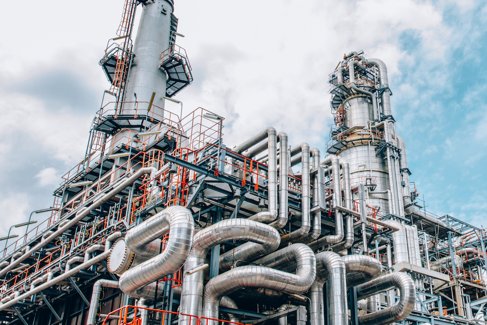

ELEME CRUDE OIL REFINERY
PROJECT STATUS: 50%
For many years Nigeria has suffered the indignity of being the only top six OPEC Nation without the capacity to refine enough petroleum to satisfy its local consumption. As a result, the nation has endured perennial scarcity of petroleum products for decades, but thankfully, that sad chapter of our national life is about to come to an end with the completion of the ELEME REFINERY.

Two years ago, the Federal Government of Nigeria initiated this laudable project to build from scratch, a world-class refinery that will output more than enough petrol to satisfy local consumption and save the nation’s blushes.
If you are asking what makes this project different and more likely to succeed, first, this refinery is located in the heart of the oil producing Niger Delta region which reduces the cost of supplying crude oil to the facility unlike the logistic nightmare that is the Kaduna refinery.
Also, this administration has signed a 20-year maintenance contract with Siemens, its installation partners, to handle the maintenance of the refinery for the duration of the contract. This move will ensure that the refinery doesn’t fall into a state of disrepair as the other refineries have done. During this period Siemens will train at least 100,000 Nigerians in all the key areas of maintaining the refinery so that Nigerians will take over from them at the expiration of the contract.
Now at 50% completion, the Federal Government has taken delivery of all the key components for the refinery including the gigantic continuous catalytic regeneration reactor pictured below and is on schedule to complete the project in another two years.
Benefits of this project
- Employment: An immediate dividend of the Eleme refinery project has been the huge boost it has given to our employment numbers, employing over 100,000 Nigerians in high, medium and low wage categories since the start of the project two years ago. The project is also expected to hire another 100,000 people before completion and another 200,000 on completion to operate the refinery.
- Ending fuel scarcity: The Eleme refinery is expected to produce 120 million litres of Premium Motor Spirit(PMS) which is twice our daily consumption quota which is currently at 54 million litres. With this amount of PMS being produced daily, the perennial fuel scarcity that has dogged us will never rise again.
- Plug economic leakage: As soon as the Eleme refinery comes on stream there will be no need to continue the highly wasteful subsidy regime that has frittered away most of our crude oil earnings over the years. This would leave the Federal Government with even more money to spend on other useful capital projects that will impact the lives of Nigerians positively.
- Boost foreign reserves: Aside from plugging leakages, the Eleme refinery is also optimized to produce various petrochemical by-products from crude oil needed for manufacturing. This will mean even more income for us from the same quantity of oil than we used to earn by just exporting unrefined crude oil.
Support Eleme Oil Refinery today with your tax to put an end to
fuel scarcity forever!